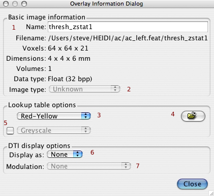

To view information about a layer, select the layer in the Layer List and press the "Layer Info" button . Note that, once this dialog is showing, you can select other layers via the Layer List and the information dialog will update accordingly.
Basic information
Lookup table optionsThis section controls the greyscale or colour-scale lookup table used(3). The file selector(4) button can be used to load a LUT from disk. If the second LUT option is activated, by turning on the checkbox(5), then this LUT is applied over negative ranges, and the first LUT is used for the positive values. In this case the bricon controls are set wrt the first LUT and should therefore be positive values (an equivalent inverted range is then used for the second LUT). DTI display optionsThe selects DTI image display mode:RGB or Lines(6), for the current layer. Additionally a modulation layer can be selected (7). |
 |